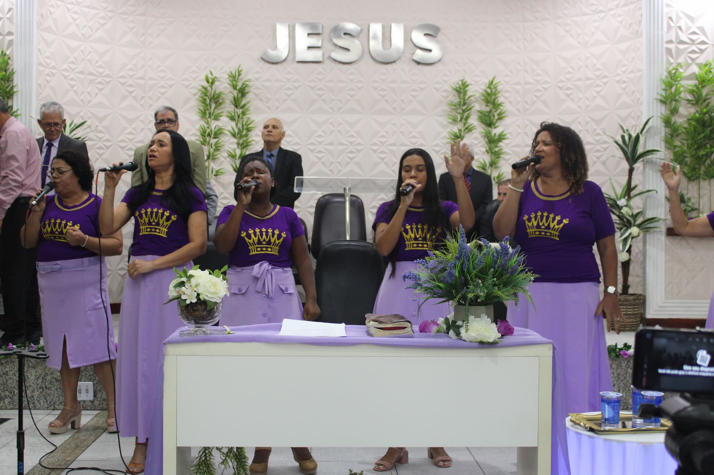

Igreja em Vila de Cava · Nova Iguaçu
Bem-vindo à Assembleia de Deus de Vila de Cava
Um lugar de adoração, comunhão e crescimento espiritual.
Cultos — domingos, 9h e 18h · quartas, 19h30
Nossa caminhada
O que nos guia
Quatro convicções sustentam tudo o que fazemos — do culto de domingo ao cuidado com cada família da comunidade.
-
Amor
Vivemos o mandamento do amor a Deus e ao próximo.
-
Comunidade
Relacionamentos que edificam e acolhem.
-
Fé
Firmados na Palavra e em oração contínua.
-
Serviço
Servimos a Deus servindo pessoas.
Meditação da semana
Carregando versículo...
Missões · A tarefa inacabada
Ainda há quem nunca ouviu
“Ide por todo o mundo e pregai o evangelho a toda criatura” — Marcos 16:15. Dois mil anos depois, a ordem permanece aberta. Estes números não são estatística: são povos, línguas e vizinhos esperando.
3,42 bilhões
de pessoas vivem em povos onde praticamente não há quem lhes anuncie o evangelho — 42% de toda a humanidade, concentrada na chamada Janela 10/40.
- 7.188
- povos não alcançados, entre os 17.269 povos do mundo Joshua Project
- 1.676
- línguas ainda não têm um único versículo da Bíblia traduzido Wycliffe Global Alliance · 2025
- 164
- povos indígenas não alcançados aqui no Brasil — 99 deles sem nenhuma presença missionária AMTB
- 16,4 milhões
- de brasileiros declaram não ter religião alguma IBGE · Censo 2022
Ore
Adote um povo não alcançado em suas orações — no culto, na célula e em família.
Vá
Da Janela Amazônica às nações: pergunte à liderança como servir em uma viagem missionária.
Contribua
Sustente quem já está no campo. Fale com a secretaria e conheça os projetos que a igreja apoia.
Fontes: Joshua Project (2026) · Wycliffe Global Alliance (2025) · AMTB · IBGE, Censo Demográfico 2022
Servindo juntos
Ministérios
Cada chamado encontra um lugar para servir — do louvor às crianças, da juventude à comunidade.


A Palavra
Sermões recentes
A carregar pregações…
Acompanhe de onde estiver
No YouTube
Últimas pregações e vídeos do canal.
A carregar vídeos…
Você é bem-vindo
Visite-nos neste domingo
R. Vítor Hugo, 76 — Vila de Cava, Nova Iguaçu — RJ